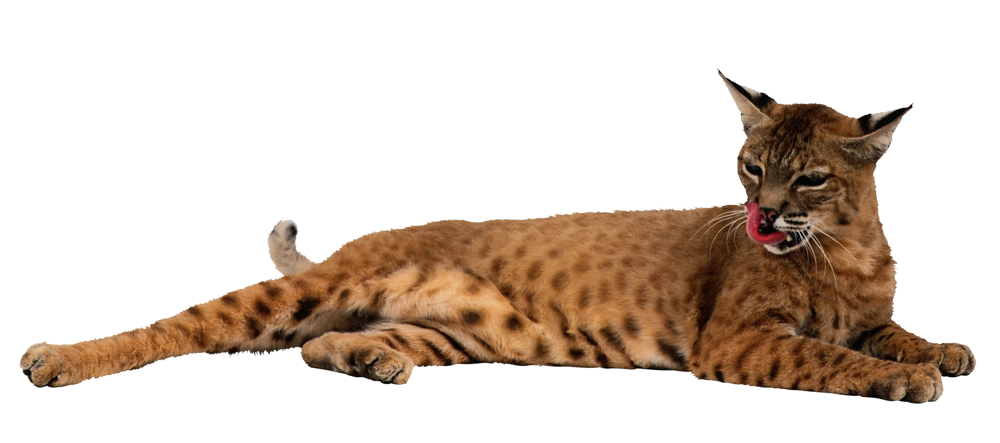

Дата моего рождения 13.02.2004, по знаку зодиака я водолей ♒︎.
Мне 20 лет, я учусь на 3ем курсе направления КТ Итмо г. Санкт-Петербург. Родом я из города Саранска республики Мордовия.
В детстве я посещала художественную школу, но после 4х лет, я приняла решение, уйти оттуда, так как не замечала результатов, выделяющих меня среди нашей группы, я не видела в себе особого таланта (хотя может просто недостаточно работала?)
, а также из-за развивающегося сколиоза я приняла решение бросить и сменила сферу - классические и народные танцы. Но там я тоже не слишком долго задержалась - недостаточные внешние и физические данные. После я перевелась в школу, где был математический кружок. Красивая олимпиадная математика, а особенно планиметрия, очень привлекли меня и вдохновили много тренироваться. Это стало главным моим увлечением вплоть до окончания школы, поэтому выбор и пал на техническое направление. Но после окончания "олимпиадного течения", я перестала черпать вдохновение в математике и нашла новое увлечение - взрослое направление танцев, которое появилось и стало популярно относительно недавно.
